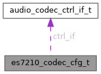

|
TermostatBox3
|
ES7210 codec configuration, only support ADC feature. ...
#include <es7210_adc.h>

Javni atributi | |
| const audio_codec_ctrl_if_t * | ctrl_if |
| bool | master_mode |
| uint8_t | mic_selected |
| es7210_mclk_src_t | mclk_src |
| uint16_t | mclk_div |
ES7210 codec configuration, only support ADC feature.
| const audio_codec_ctrl_if_t* es7210_codec_cfg_t::ctrl_if |
Codec Control interface
| bool es7210_codec_cfg_t::master_mode |
Whether codec works as I2S master or not
| uint16_t es7210_codec_cfg_t::mclk_div |
MCLK/LRCK default is 256 if not provided
| es7210_mclk_src_t es7210_codec_cfg_t::mclk_src |
MCLK clock source in master mode
| uint8_t es7210_codec_cfg_t::mic_selected |
Selected microphone